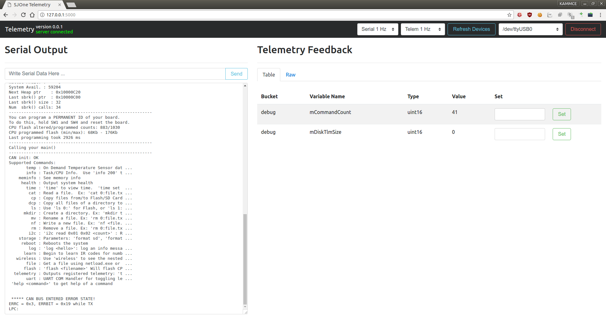

Telemetry: Embedded Runtime Monitoring and Tuning¶
Wikipedia:
Telemetry is an automated communications process by which measurements and other data are collected at remote or inaccessible points and transmitted to receiving equipment for monitoring.
Telemetry is another means of testing your firmware. Unit test are useful for testing your code’s logic and making sure the behavior of your code operates as intended. A debugger allows you step through your code one line at a time, inspecting variables to see when adverse behavior arises in your firmware. Telemetry, more or less, is a means of feeding back information to the user about the current state of the firmware during runtime.
Setting up Telemetry¶
Telemetry was setup when you ran the initial ./setup script.
Using Telemetry¶
- Step 1
Run
./startscript. It should open up a webpage in your browser.You should see the following:

- Step 2
- Connect your SJOne Board to your computer.
- Step 3
- Press the Refresh Devices button to check your system for serial devices.
- Step 4
Press the Connect button to connect to the serial device. At this point, you should see the serial output of the SJOne board being written to the Serial Output textarea. If Telemetry is running on the SJOne, then a table will be generated in the Telemetry Feedback area.
